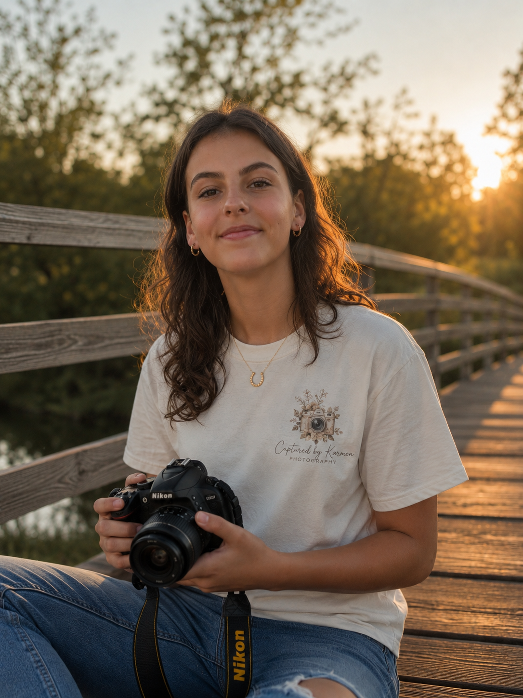
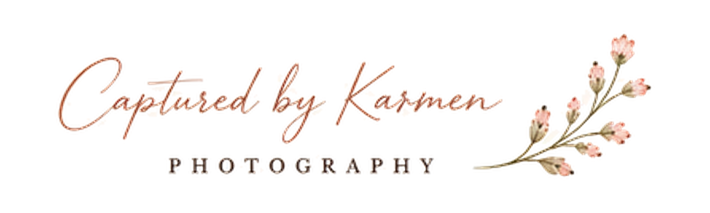

Parent-managed
An adult coordinates every inquiry and planning conversation.
Mount Sterling, Kentucky and surrounding communities
Natural photography with a creative perspective—focused on genuine expressions, meaningful details, and memories that feel like you.
All inquiries, scheduling, locations, and client communication are reviewed and coordinated by a parent or guardian.

Portfolio


Original photographs are being selected and reviewed for quality and public-use permission before publication.
About Karmen
Captured by Karmen is a developing photography brand drawn to real expressions, warm light, thoughtful details, and the moments people want to remember.
The goal is a relaxed, parent-supervised experience and photographs that feel genuine from the first look to the years ahead.
A thoughtful experience
Session planning, communication, permissions, timing, and locations are managed with a parent or guardian. Public availability has not opened yet.
An adult coordinates every inquiry and planning conversation.
Photography and public portfolio use are reviewed separately.
Session expectations are agreed upon before any photography begins.
Parent-managed inquiry
This pilot does not collect, transmit, or store inquiry information. When an approved parent-managed contact method is ready, this section will be updated before inquiries open.
No contact details or session information can be submitted through this page.